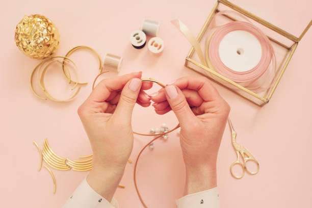

Welcome to Jewelry Making
I am interested in making jewelry. I have my own local business called Fairy Findings. It is nature based handmade products. They are hypoallergenic. Everything is made completely from the ground up using natural items. I hve been making jewelry for about five years now. My business has grown a lot in the past year due to my supportive friends. I plan on selling at the Chattanooga Market this summer.
I make jewelry out of natural items a fairy would find on a frolic in the forrest. This includes rocks, crystals, flowers, leaves, and anything shiny! I like to keep it natural because the most beautiful pieces can be made from things I find on a walk! Crystals are my favorite thing to work with.
